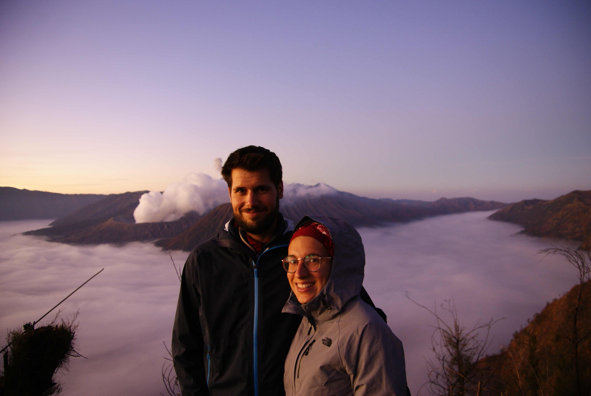
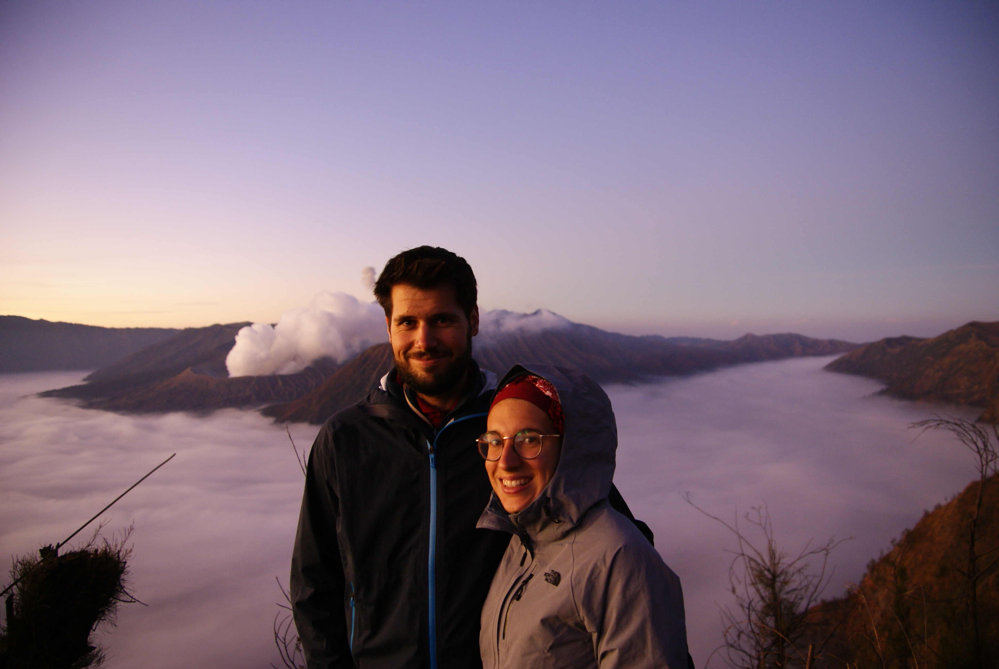

Bromo / Ijen
De la fumée et des nuages...et pas beaucoup de sommeil !
Le Gunung Bromo
Nouveau jour, nouvelle expédition.
Pour atteindre le mont Bromo, des tonnes de conseils différents sont donnés sur les blogs. Y aller par ses propres moyens, ou se payer une organisation toute faite ? Les rabatteurs dans la rue principale de Yogyakarta ont au moins tous le même discours : prenez mon expédition ! Après avoir lu des expériences de touristes sordides impliquants des trajets nocturnes interrompus par des gangs de motards, nous nous sommes donc décidés à couper la poire en deux à savoir prendre juste un bus et une nuit à Bromo par une agence.
Un mini bus vient donc nous chercher à 8h30 à notre hôtel et c'est parti pour 12h de trajet. Enfin 12h de trajet chaotique avec des amortisseurs complétement pourris sur une route avec des nids de poule. C'est au bout de 2h que je tombe sur l'en cas du Lonely : "mais peu (de voyageurs) apprécient le voyage long, lent et peu confortable dans de vieux véhicules". C'est bien ça, on est en plein dedans ! Une autre voyageuse partage le calvaire, Bahia, une marseillaise et voyageuse confirmée qui sort de 6 mois de voyage solo en Asie. Le classe. Elle nous brieffe, on prend bonne note, et ça fait passer le temps. Bon en plus de tout ça, il ne faut pas trop regarder dehors car le chauffeur est taré, drogué ou les deux. Il double, crie, peste et klaxonne qu'il en peut plus. Il manque d'écraser une demi douzaine de scooters, et il fouille dans le sac de Bahia pendant la pause pipi. Cette fois-ci, c'est juste too much, on s'en plaint à l'agence.
Arrivée à l'hôtel, le tengger indah vers 21h, on se couche vite fait pour pouvoir se lever à 2h30.
Le lendemain, on bénit decath pour toutes les couches qu'on a enfilées et pour la laine de mérinos. La rando à la lampe torche à 3h du mat' est sympa et on s'arrête tous les trois (avec Bahia) à un point de vue pour attendre le lever de soleil.
C'est majestueux, indescriptible, époustouflant, surnaturel. Le soleil se lève sur la forêt et le village à gauche, qui s'arrête brusquement pour laisser la place à une mer dense de nuages. En face, le Bromo et son copain volcan, le Batok, émergent des nuages. Ca donne envie de prendre son élan, sauter et rebondir de nuage en nuage jusqu'au cratère. Il faut le voir pour le croire.
On redescent après en avoir pris plein les mirettes, et grâce à l'excellent site mifuguemiraison, on trouve un chemin à travers les champs de poireaux pour descendre dans le cratère, direction la mer de sable : Laotian Pasir. La encore un paysage surréaliste. D'abord un peu de végétation puis plus que du sable (des cendres ?), quelques cavaliers, la mer de nuage qui s'écarte progressivement et en toile de fond le Bromo. Il est 6h du mat'.
Au bout du chemin on rejoint la grosse masse de touristes et de jeeps multicolores. On monte comme on peu les escaliers au milieu de centaines de personnes. On retrouve Bahia qui avait un peu speedé pour ne pas louper la suite de son voyage, un dernier bisou et on se sépare.
Là-haut on s'écarte un peu des gens, pas trop quand même, le vertige n'aide pas. Des deux côtés c'est le vide et il ne vaut mieux pas tomber côté cratère. Le Bromo gronde et fume quelques mêtres plus bas. Au sommet, une pensée me frappe : plein de séismes à Lombok qui est juste à côté, est ce c'est bien malin de grimper sur un volcan ? Tu te calmes Maïlys.
On redescend tranquillement, rassemble nos affaires et on attrape un mini bus partagé avec d'autres touristes direction Probolinggo.
Le plateau d'Ijen
Train de Probolinggo à Banyuwangi (qui sera aussi le point de départ pour Bali), arrivée chez Ben, qui tient une chambre d'hôtes l'Osingvacation. Grosse nuit puis on prépare notre expédition pour la nuit prochaine : ce sera départ à 00h30 pour débuter le trajet et la rando (toujours plus les mecs, se lever à 2h du mat', ça suffisait pas ??). On se ballade pendant la journée, Bagnyuwangi c'est chouette, on va à la plage, on fait quelques emplettes et au dodo à 19h30.
Lever à 00h30, 1h de route, la jeep galère à monter la côte... mais on y arrive ! En haut on est un groupe de 6 et on ne verra jamais le guide qui devait nous accompagner, nous informer voire nous dépanner en cas d'accident. Nevermind. On part tous les 6, armés de masques à gazs. La montée est assez rude, et je jure une quinzaine de fois de me remettre au sport plus tard (comme d'hab). Il y a des centaines de touristes c'est dingue. Et cette sensation de surpopulation s'accentue quand il s'agit de descendre dans le cratère quasi en file indienne sur des roches glissantes. En sens inverse, des porteurs de souffre remontent leurs chargements de 80 kgs sur leur épaules. Ils sont payés au lance pierre, travaillent dans des conditions ignobles et nous touristes on est comme des cons à leur bloquer le passage. On marche sur la tête.
En bas, on guette les "blue fires" pour lesquels on est venus. Ce sont des flammes bleues qui ne se voient que pendant la nuit noire (c'est donc également la raison pour laquelle les porteurs de souffre ne travaillent que la nuit). Mouais ... on en a pas vraiment vu petite déception (ok grosse). On remonte pour aller voir le lever de soleil au sommet, mais une belle colonne de fumée cache le lac bleu vert au fond du cratère. Tant pis c'était quand même chouette.
Redescente à pied, puis en voiture, puis un grab, puis un ferry et nous voici à Bali !
Mayo
 



 <\div>
<\div>